直播预告 | 云游巴黎歌剧院，探秘舞台背后的故事！
法国旅游发展署 ·
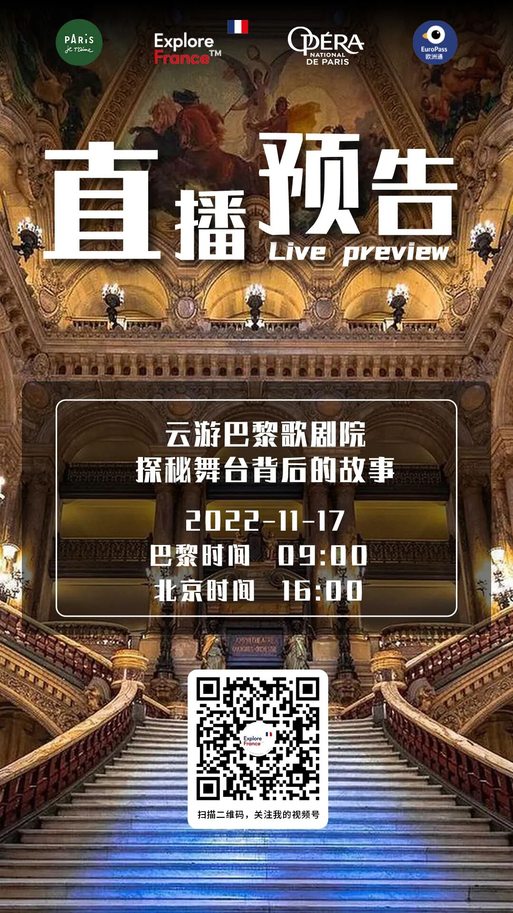
探访过辉煌璀璨的凡尔赛宫殿，
观摩完感性美艳的疯马秀表演，
我们终于迎来了
云游巴黎系列的收官之作！
在本期直播中，
法小旅携手巴小旅和欧小通
前往位于巴黎市中心的
一座金光闪耀的建筑
——巴黎歌剧院。
2022年11月17日
巴黎时间 9点
北京时间 16点
点击下方预约按钮
锁定【法国旅游发展署】视频号直播间
一起期待吧！
迷人的巴黎歌剧院
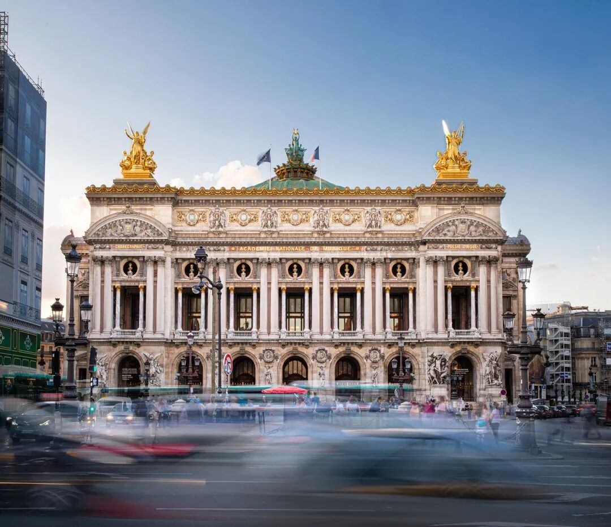
图丨© Elena Bauer / OnP
随着水晶枝形吊灯缓缓升起，剧院魅影的歌声响彻空旷的剧场大厅。作为这部经典音乐著作的背景地点，坐落在巴黎九区的巴黎歌剧院 加尼叶宫是游客们来到法国的打卡胜地。
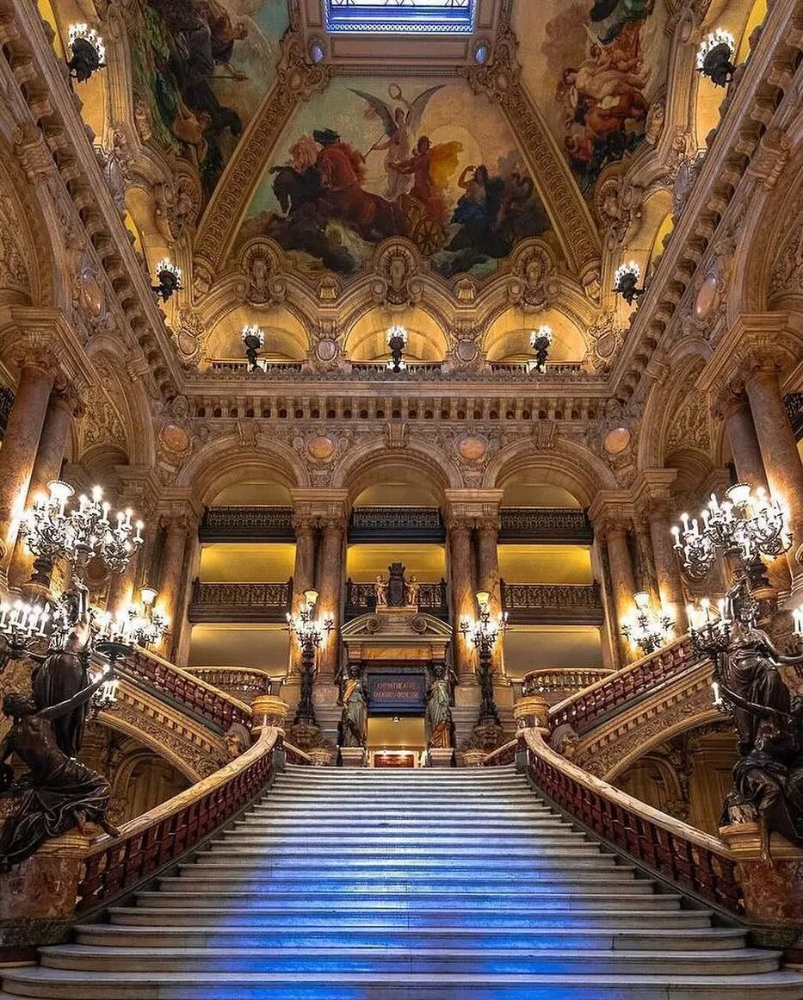
图丨© ettore_riva_operadeparis
巴黎国家歌剧院包含巴黎九区的加尼叶歌剧院(Palais Garnier)与十二区的巴士底歌剧院(Opéra Bastille)两座剧院。为人所熟知的加尼叶宫歌剧院，坐拥这座城市最繁华的街区：背靠老佛爷百货(Galeries Lafayette)，两侧道路伸向旺多姆广场(Place Vendôme)与皇家宫殿(Palais Royal)，眼前宽阔的歌剧院大街则直通卢浮宫与杜乐丽花园(Jardin des Tuileries)。巴黎歌剧院与巴黎圣母院(Cathédrale Notre-Dame de Paris)、卢浮宫博物馆(Musée du Louvre)以及圣心大教堂(Basilique du Sacré-Coeur)，共同被视为是巴黎的城市象征。
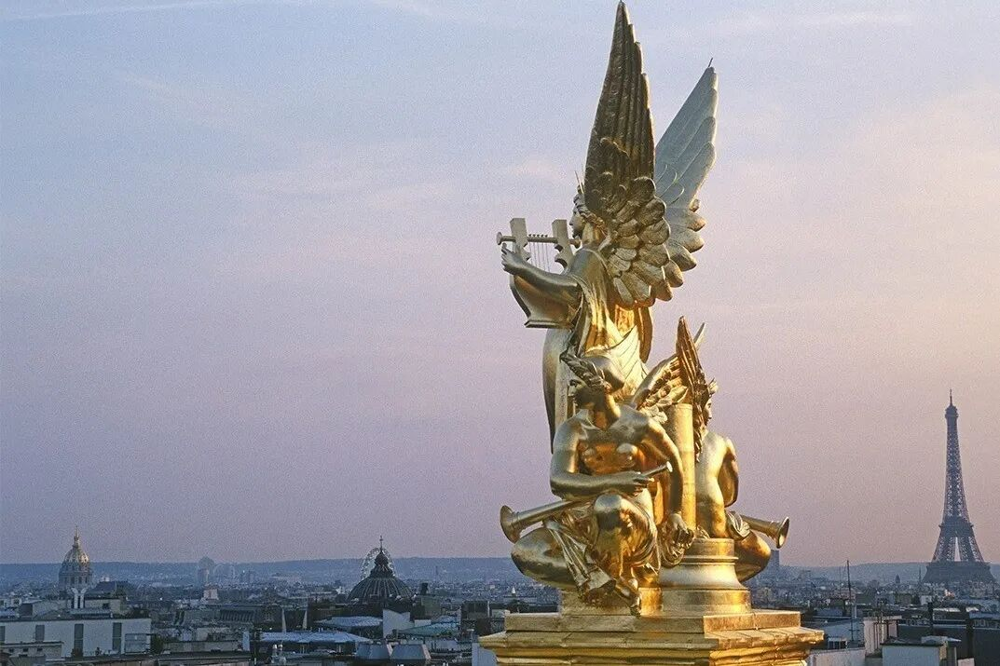
图丨© Jean Pierre Delagarde / OnP
见证时代变迁的建筑
十八世纪的一场大火烧毁了法国首座皇家歌剧院，百年后法国艺术部终于决定复兴重建，由此巴黎歌剧院开始招标。1861年，年轻的建筑师查尔斯·加尼叶(Charles Garnier)从一众人才中脱颖而出，设计建造了这座19世纪拿破仑三世风格的典型建筑艺术，加尼叶宫的大名从此广为人知。
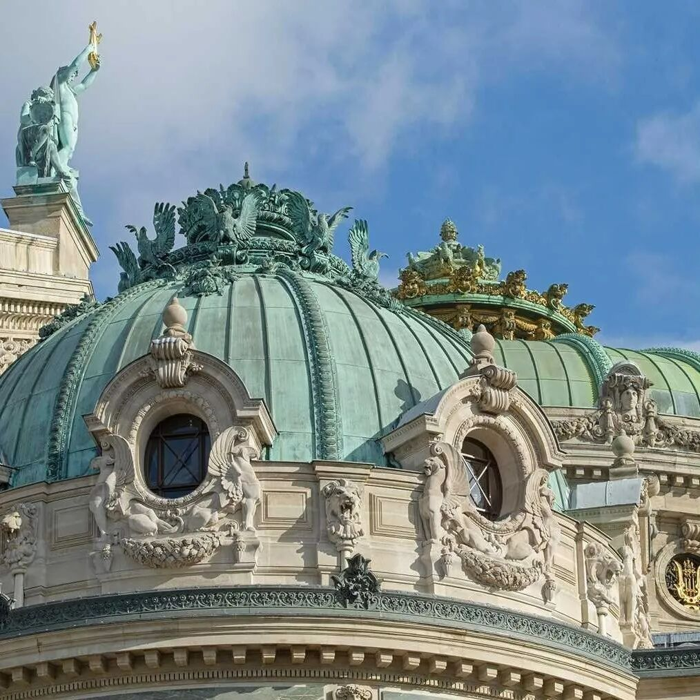
图丨© Jean Pierre Delagarde / OnP
殿堂级艺术空间
巴黎歌剧院曾是国家音乐学院(Académie Nationale de Musique)所在地，其高含金量的音乐文化价值与壮丽的古典建筑风格相辅相成，使之成为法国最具影响力的文化历史地标之一。
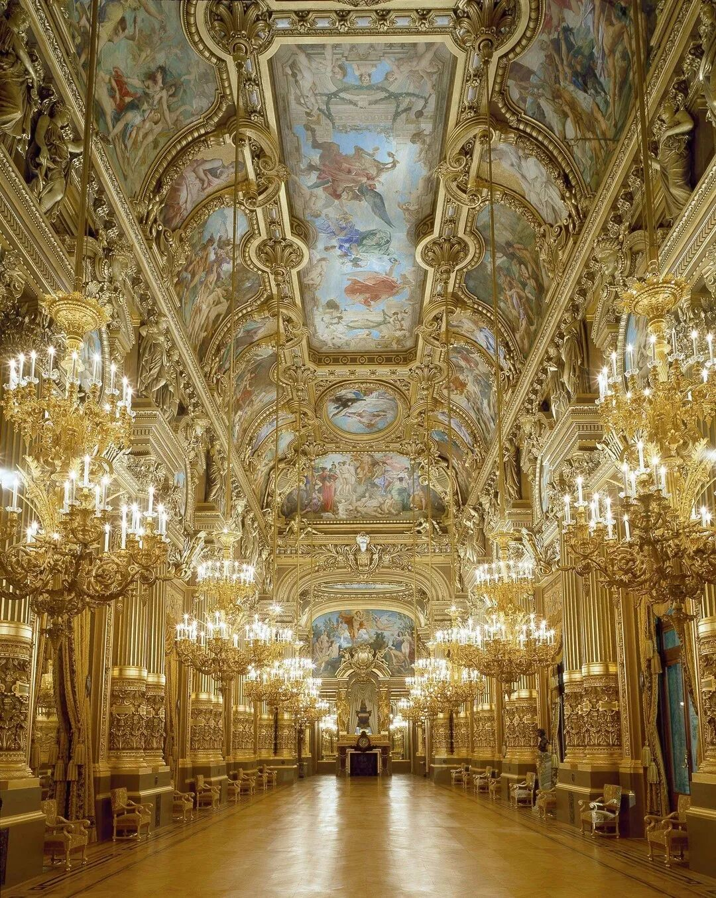
图丨© Jean Pierre Delagarde / OnP
如今的加尼叶歌剧院年均吸引75 万游客，芭蕾、歌剧等艺术形式纷纷登上舞台，是艺术家们梦想中的至高殿堂。无论人们是来参观金色装潢还是欣赏一场歌剧表演，巴黎歌剧院都是法式艺术美学当之无愧的不朽巨作。
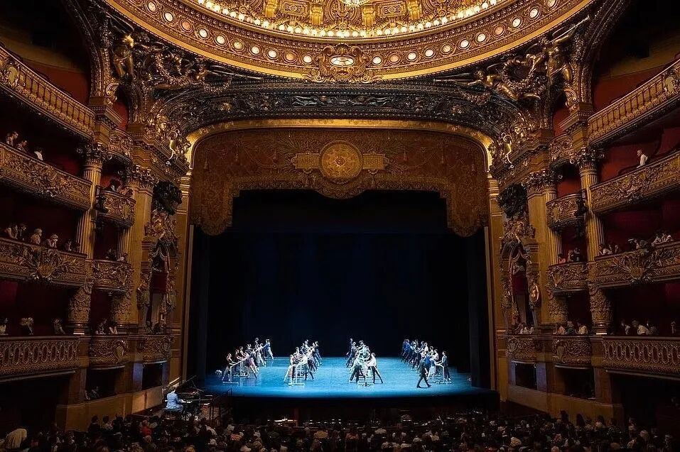
图丨© kellermans.lens / OnP
直播亮点
本次直播将揭秘巴黎歌剧院加尼叶宫的台前幕后，这一场建筑美学与舞台文化的盛宴，为你一网打尽这座法国经典艺术殿堂。
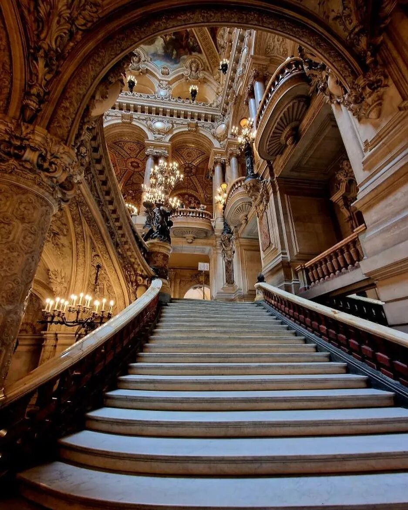
图丨© anetteb_operadeparis
1
建筑细节全方位抓拍
巴黎歌剧院加尼叶宫是折衷主义建筑的代表作品，巴洛克、洛可可多种风格的雕饰设计，造就了歌剧院气势恢宏的外观与金碧辉煌的装潢。这座高度严谨的建筑在建造过程中遭遇过哪些坎坷？歌剧院内收藏着哪些名人的雕塑与画像？演出大厅为何选择了正红色调？剧院魅影又是否真的存在？本次直播中我们将为你一一解答，还将重现周杰伦MV中出现的画面，抓住巴黎歌剧院的每一处设计细节！
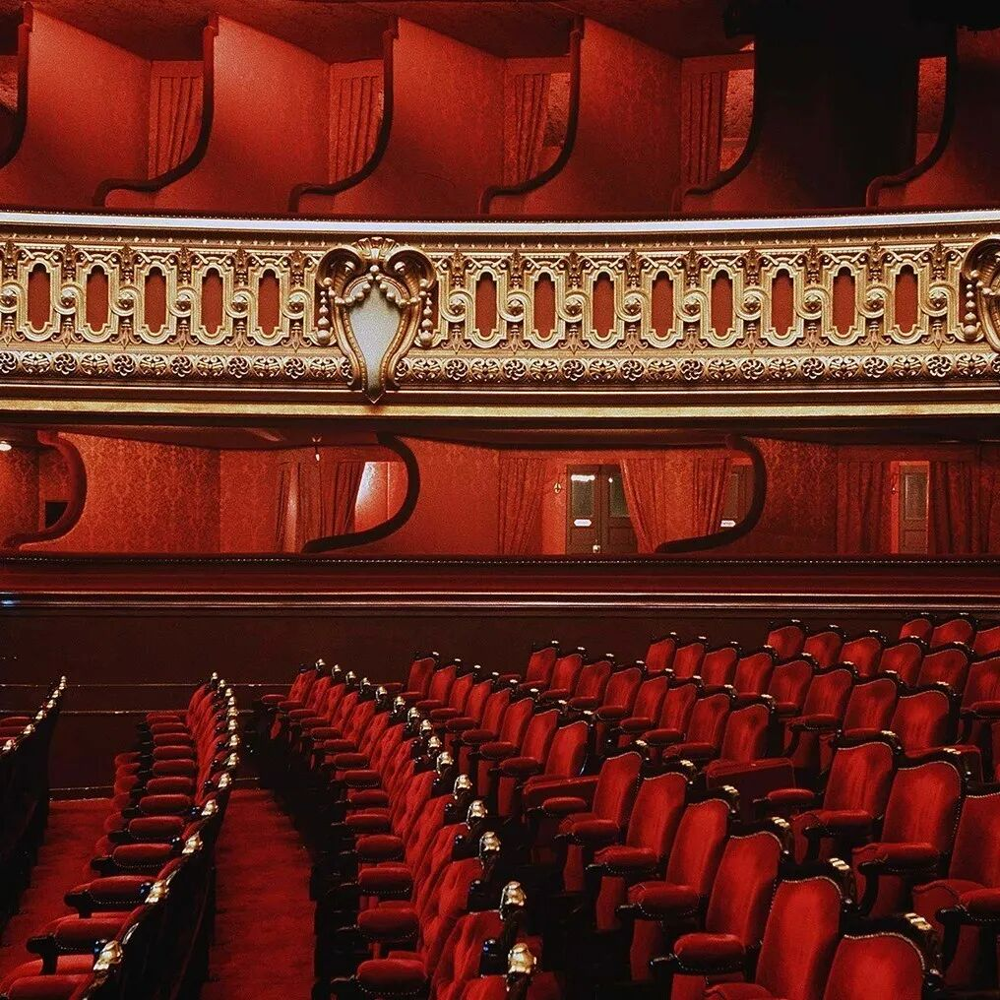
图丨© Jean-Pierre Delagarde / OnP
2
世界最大抒情剧场的台前幕后
习惯了坐在观众席注视舞台，不如跟随我们的直播镜头，以全新视角从舞台上欣赏剧院吧！让这次直播带你探索歌剧院舞台布景与设计的奥秘，更有神秘后台热身休息厅的幕后直击，为你展现这座世界著名歌剧院的完整框架！
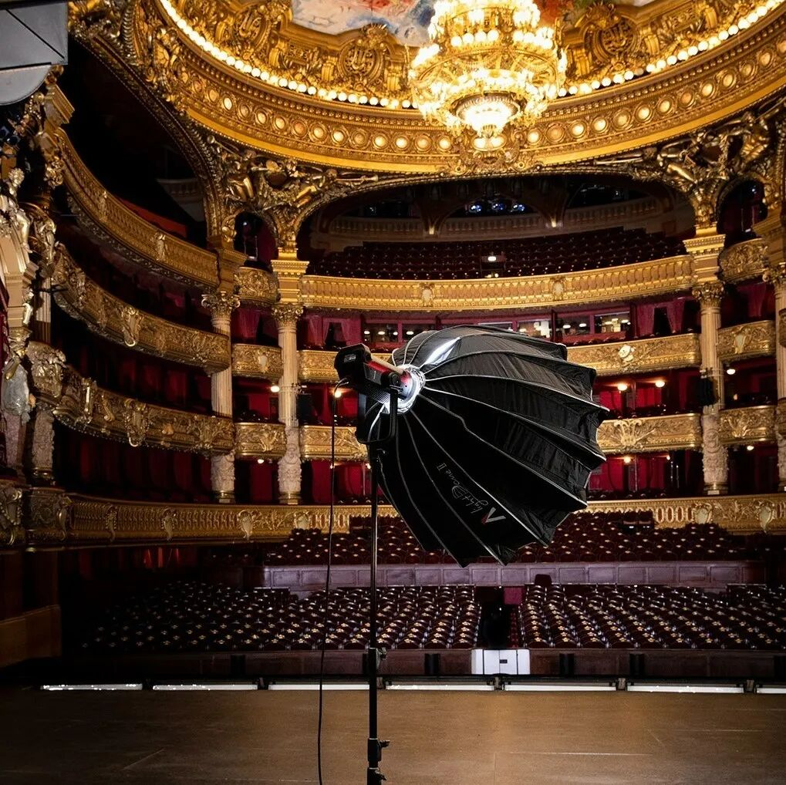
图丨© bauer.elena / OnP
3
专属戏服工作室大放送
本次直播特约邀请了顶级舞台服装设计师 Xavier Ronze 先生，带我们在巴黎歌剧院的道具服装工作室一探究竟。作为歌剧院服装部的总负责人与制作人，他将在采访中为我们揭秘舞台服装准备的细节故事，一起来发现幕后艺术大师们如何塑造出万千生动立体的舞台形象，满满都是内幕干货！
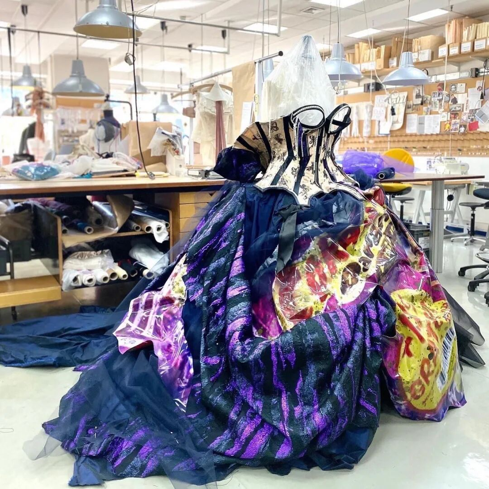
图丨© Myriam Vallée / OnP
抽奖环节
本次直播奖品由巴黎歌剧院独家赞助。
点击下方链接
关注巴黎歌剧院官方公众号
第一轮：歌剧院文具礼包 共一份
丝绒笔记本 x 1
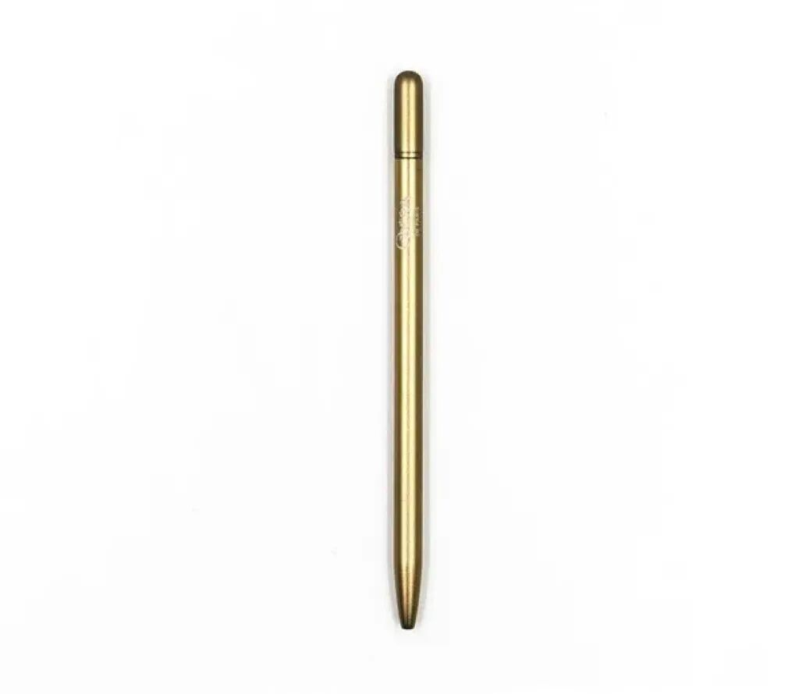
金色圆珠笔 x 1
第二轮：歌剧院精品礼包 共两份
歌剧院logo托特包 x 1
歌剧魅影钥匙扣 x 1
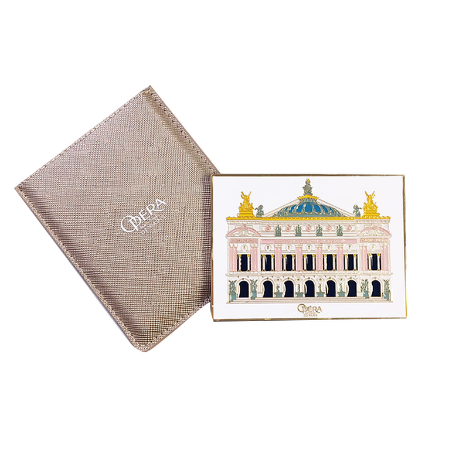
加尼叶宫随身镜 x 1
本次直播由法国旅游发展署、巴黎旅游局、EuroPass 欧洲通共同合作播出。
快来关注法国旅游发展署的微信视频号
巴黎歌剧院的极致视觉享受不能错过！
2022年11月17日
巴黎时间 9点
北京时间 16点
云游巴黎系列的完美收官直播，
就等你的到来啦！